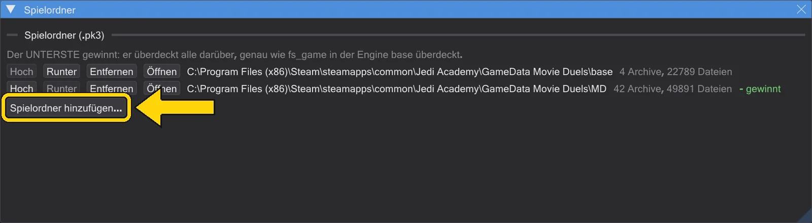

Einstellungen und Updates
Wo das Programm seine Pfade und Optionen hält, wie man Tasten ändert und wie Updates kommen.
Spielordner#
Bearbeiten → Spielordner nennt die Ordner, deren .pk3-Archive das Programm liest, je mit Hoch, Runter, Entfernen und Öffnen. Der unterste gewinnt gegen alles darüber, wie fs_game in der Engine base überschreibt. Ein Ordner ohne Archive sagt das - dann stimmt der Pfad nicht.

Einstellungen#
Bearbeiten → Einstellungen (oder Einstellungen in der Aktionsspalte, Alt+P) enthält die Optionen des Original-BehavEd:
- Verzeichnisse: Skriptpfad, Befehlsbeschreibung (die
.bhc, die jeden Befehl festlegt - Befehlsmodell neu laden liest sie neu), Quelldateien. - Letzte Datei beim Start öffnen, Klapplisten alphabetisch, Zweiter Farbsatz für Symbole, Nachfragen bei Öffnen/Neu/Beenden, Dateidialog beim zuletzt benutzten Ordner öffnen.
- Sprache, Farbgebung und Oberflächengröße stehen im Menü Ansicht.
Tasten ändern#
Bearbeiten → Tastenkürzel nennt jede Aktion mit Taste. Ein Kürzel anklicken und die neue Taste drücken; Esc bricht ab, Rücktaste löscht. Eine schon belegte Taste wird genannt. Die Vorgaben stehen in Tastenkürzel.
Updates und Änderungsliste#
Hilfe → Nach Updates suchen fragt GitHub nach einer neueren Fassung und zeigt, was neu ist; Herunterladen und installieren ersetzt die Programmdateien und bietet einen Neustart an. Der Schalter daneben entscheidet, ob das beim Start geschieht. Hilfe → Changelog zeigt Fassung für Fassung, was behoben und hinzugekommen ist, in deiner Sprache - nach einem Update öffnet sie sich einmal von selbst.